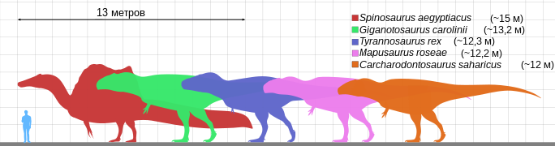

Заврисхиевые
Ящеротазовые, или ящеротазовые динозавры, или заврисхии (лат. Saurischia), — одна из двух традиционно выделяемых основных клад динозавров(наряду с птицетазовыми), исторически рассматриваемая в ранге отряд. У ящеротазовых, в отличие от птицетазовых, лобковые кости первично наклонены вперёд (у некоторых представителей — герреразаврид, теризинозавроид, дромеозаврид и птиц — лобковые кости отклоняются назад). Вопреки названию, ящеротазовые, а не птицетазовые, дали начало птицам, которые, по преобладающим среди палеонтологов позвоночных кладистическим представлениям, являются единственной пережившей мел-палеогеновое вымирание группой ящеротазовых.
Ящеротазовые обычно считаются монофилетической («естественной») группой, включающей обширные клады теропод (Theropoda) и завроподоморф (Sauropodomorpha) в составе группы Eusaurischia («настоящие ящеротазовые»), а также боковую базальную ветвь Herrerasauria (герреразавриды и родственники), которую иногда помещают в состав теропод. Согласно альтернативной точке зрения, тероподы более близки к птицетазовым, чем к завроподоморфам, и, соответственно, ящеротазовые в традиционном понимании являются парафилетической («искусственной») группой, которую следует либо расформировать, либо переопределить (последнее радикально изменило бы её состав.
Древнейшими представителями ящеротазовых были такие динозавры, как герреразавриды герреразавр и ставрикозавр, завроподоморф эораптор и теропод эодромей, жившие примерно 235—228 млн лет назад (карнийский век, верхний триас). Судя по ископаемым остаткам этих животных и их близких родственников, ранние представители клады являлись небольшими неспециализированными плотоядными, передвигавшимися на двух конечностях.
Ранние тероподы имели довольно консервативную анатомию, общие черты которой были характерны для предков динозавров. Облигатно бипедальна, походка предков динозавров была сохранена всеми тероподами; большинство нептичьих теропод обладало уплощёнными с боков зубами с режущими пильчатыми краями, называемыми зифодонтными, что говорит об их плотоядности. В процессе эволюции некоторые тероподы группы целурозавров, такие как теризинозавры, орнитомимозавр, овирапторозавры, альваресзавриды и авиалы (птицы), адаптировались к всеядности или растительноядности, что позволило им освоить новые экологические ниши. Тероподы, как ранние, так и продвинутые, сильно варьировали в размерах. По оценкам, длина спинозавра, одного из крупнейших теропод (возможно, крупнейшего), могла достигать до 16 м. Длина современной колибри-пчёлки составляет примерно 5 см (энанциорнисовая птица Cratoavis была ненамного больше — 6,6 см в длину); некоторые нептичьи тероподы, такие как Epidexipteryx, достигали около 25 см в длину.
Первые завроподоморфы постепенно перешли с хищничества на всеядность, а позже и на растительноядность, при переходе к завроподам сменив бипедальную походку на квадропедальную. Последние завроподоморфы, не относящиеся к завроподам (ранее выделялись в группу прозавропод), вымерли в ранней юре[7]. Завроподы были квадропедальными растительноядными со столбообразными конечностями и длинными хвостами и шеями. Сочетание унаследованных от предков признаков и эволюционных новшеств позволило представителям разных групп завропод поздней юры и мелового периода независимо вырасти до гигантских размеров (хотя известны и карликовые формы). Тогда как первые завроподоморфы достигали около 1,5 м в длину, длина крупнейших завропод могла достигать 35—45 м, что делает их самыми длинными когда-либо существовавшими позвоночными.
Последние ящеротазовые, не относящиеся к веерохвостым птицам, вымерли вместе с птицетазовыми и многими другими группами в ходе мел-палеогенового вымирания 66 млн лет назад. Предполагается, что выживание веерохвостых птиц обеспечила их адаптация к поеданию семян, оказавшаяся жизненно важной в условиях вымирания.